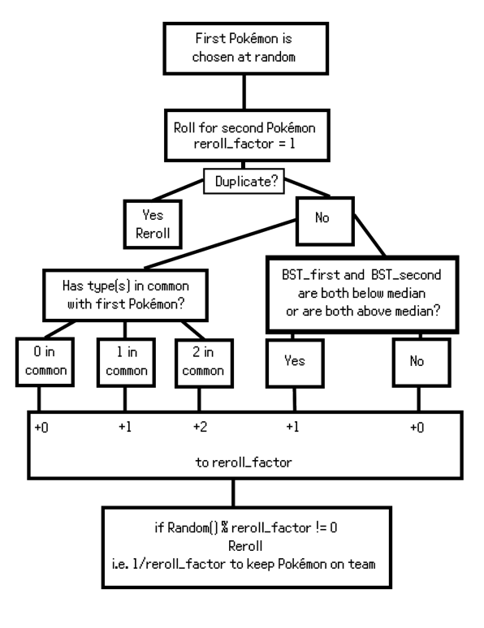
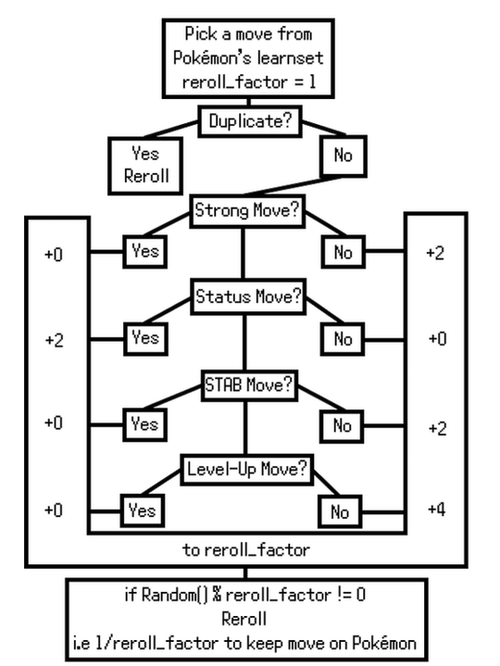

Welcome to the ELITE FOUR!
As all us Pokémon fans know, the most fun and challenging part of a nuzlocke or even standard run of the game is the Elite Four.
So, I decided to make a Pokémon FireRed Elite Four nuzlocke simulator in the form of a fully functional ROM Hack!
Many thanks to the decompilation team at pret for making this project possible.
Wanna try it? Check RELEASES here!
Becoming the CHAMPION
As the challenger, you will face the Kanto elite four as usual. But this time around, it won't be as easy.
You are given a psuedo-random team of six Pokémon at Level 55, also with randomized moves, and a limited bag of items and TMs.
However, if any of your Pokémon faint during the challenge, you will have no opportunity to revive them until you reattempt the challenge from the start.
If you are able to overcome these adversities, then you truly do earn the honor of being Kanto Champion.
The POKéMON
The selection pool of possible Pokémon for your team include all 79 fully evolved species from the Kanto region as well as the legendary birds. In other words, all strongest possible obtainable evolution lines before the Elite Four.
The ALGORITHM
I've implemented a balancing algorithm to make sure every random team has a fighting chance at the challenge.
1. For every instance of a Pokémon type t on your team, the probability of again getting a Pokémon of type t is reduced.
2. The probability of getting two successive Pokémon of either both sub-median or both above-median base stat total (BST) is lower than otherwise.

Note that there may be more than two types in common among your team for the third, fourth, fifth, and sixth Pokémon. Also, a pure type counts as two of its typing. So, the probability of keeping a third pure water type, BSTs aside, is 1/5.
The DIFFERENCE
As you can see, the average number of duplicate types generated with my algorithm is near halved. It also reduces the standard deviation by almost 20%. Now, you won't have all those pesky poison types all on one team.
Since my BST balancing algorithm centers around the median, naturally the average BST of your team will be almost the same as a randomly generated team. This average of 478, sensibly, is right in between the overall mean of 475 and median of 485. But the standard deviation is almost 18% lower, meaning you probably won't get a team with Gyarados, Dragonite, and Charizard all together. Sorry!
What about my Pokémon's STATS?
All IVs and Natures are purely randomized. EVs are set to 0 and experience gain is disabled 😈.
Their MOVES
The selection pool of possible moves for each of your Pokémon include their entire level-up, TMHM, and tutor learnsets.
I wanted to include some reroll factors as well in order to hopefully give your Pokémon a more balanced moveset. However, this one's way more up to chance.
There are four characteristics I rolled on as you can see in the figure below.

These particular reroll incrementers were the product of much tweaking in order to reliably form results close enough to the samples below. 'Strong' moves are the top seven moves in the Pokémon's learnset with the highest expected damage values (power times accuracy).
The RESULTS
Note that balancing the movesets with the reroll factor slightly eliminates some of the probabalistic biases that stem from the nature of a Pokémon's learnset being predominantly non-STAB, TMHM, status moves. Although I would be able to modify the reroll factors for better results, factors too high will result in diminished performance as my code is built on recursion.
The same team; on the left with randomly generated moves, and on the right with algorithmically generated moves.
Your BAG
You are provided with:

15 potions

12 super potions

10 hyper potions

3 max potions

2 full restores; use them wisely!

1 ether

1 elixir

5 full heals

2 random battle items

1-4 pp ups at random

25% chance to get 1 pp max

2-5 random held items

10 random TMs
All healing items will respawn in your bag after each attempt!
My CODE
In case you were wondering, which is likely by the fact that you scrolled down this far, here's a brief description of how I programmed this game.
I implemented the above algorithms for Pokémon and move generation in a series of C getters, setters, and recursive generators which encapsulate into one function that I injected into this Cooltrainer's event script.
But, of course, data creation and parsing was done in Python.
Finally, a special thanks again to pret for decompilation, and Team Aqua's Hideout for help.
If you're interested in learning more, visit the repository link at the top of the page, or contact me on discord as linked below.
Thank YOU and please ENJOY!
)
Y